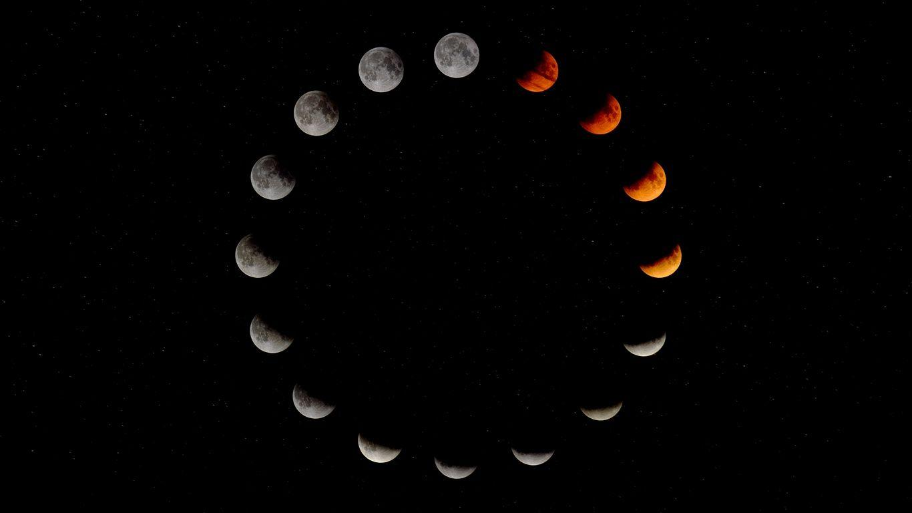
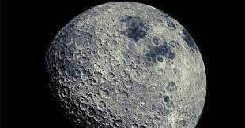

New Moon
MOON
MOON
MOON
CHAPTER 3: PHASES OF MOON
New Moon:
The New Moon phase occurs when the Moon is positioned between Earth and the Sun.
From Earth, the side of the Moon that is illuminated by the Sun is facing away from us, making it appear as a dark circle in the sky.
This phase marks the beginning of the lunar cycle.
Waxing Crescent:
After the New Moon, a small portion of the Moon becomes visible as a crescent shape.
The crescent gradually increases in size (waxes) as the Moon moves away from the Sun and becomes more illuminated.
This phase is often visible shortly after sunset in the western sky.
First Quarter:
In this phase, half of the Moon's visible side is illuminated by the Sun.
It is called the "First Quarter" because it occurs roughly one-quarter of the way through the lunar cycle.
It is visible in the evening sky and is often mistaken for a "half Moon."
Waxing Gibbous:
Following the First Quarter, more than half but not yet the entire visible side of the Moon is illuminated.
The illumination continues to increase as the Moon approaches the Full Moon phase.
Full Moon:
The Full Moon occurs when the entire visible side of the Moon is illuminated by the Sun.
It appears as a complete circle in the night sky.
The Full Moon rises in the east as the Sun sets in the west and is visible throughout the night.
Waning Gibbous:
After the Full Moon, the illuminated portion of the Moon decreases.
It is referred to as "Waning" because the visible part of the Moon is shrinking.
Waning Gibbous Moons are visible in the late-night and early-morning sky.
Third Quarter:
The Third Quarter Moon occurs when half of the visible side is illuminated, but it is the opposite half compared to the First Quarter.
It is also sometimes called the "Last Quarter."
It is visible in the early-morning sky.
Waning Crescent:
In this phase, only a small crescent-shaped portion of the Moon's visible side is illuminated.
The crescent decreases in size (wanes) until it becomes too thin to see, marking the end of the lunar cycle.
Waning Crescent Moons are visible in the early-morning sky.
The entire lunar cycle, from one New Moon to the next, lasts approximately 29.5 days. The specific appearance and timing of each phase depend on the Moon's position in its orbit around Earth. These phases have been used for centuries as a way to track time and were important for ancient cultures for religious, agricultural, and navigational purposes.